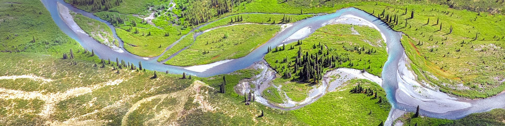

Protected areas, also known as conservation areas, are crucial for maintaining biodiversity, safeguarding natural habitats, and protecting endangered species. In today’s world, where environmental issues like deforestation, climate change, and habitat loss are increasingly urgent, the establishment and maintenance of protected areas play a key role in sustaining ecosystems and ensuring the survival of future generations. These areas provide not only environmental benefits but also support social and economic needs by offering ecosystem services, such as water purification and tourism opportunities.
Explore More About Protected Areas:
-
Government of Canada: Protected Areas

A view from Gros Morne National Park in Newfoundland, a key protected area in Canada known for its geological wonders.
-
IUCN: About Protected Areas
The International Union for Conservation of Nature (IUCN) supports efforts to protect natural spaces globally, including Canada's rich ecosystems.
-
Nature Conservancy of Canada: Protected Areas
The Nature Conservancy of Canada works to conserve critical habitats across the country, protecting unique landscapes and wildlife.
-
Parks Canada

Jasper National Park is one of the largest protected areas in Canada, offering stunning views and abundant wildlife.
-
Canadian Parks and Wilderness Society (CPAWS): Protected Areas
The Boreal Forest in Wood Buffalo National Park, one of the key areas CPAWS is focused on conserving for future generations.
-
WWF Canada: Protected Areas
Polar bears in northern Canada, part of WWF Canada's efforts to protect wildlife and their natural habitats.